Bloques 1–15 en el orden que revisó Víctor el 12/11. El pop-up y el chat abiertos están en la página 02; los banners B y C, en la 01b.
‹Envío gratis por compras mayores a S/250. Válido solo para Lima Metropolitana|Vitaminas y suplementos desde S/30.90|Suscríbete al Club Mason y obtén descuentos todos los días›
1 · Cintillo dinámicoAcordado: 3 frases de Víctor (12/11)rotan una a una con ‹ ›; el «desde S/30.90» se verifica contra el precio vigente al publicar
CompraDescubreTu rutina
Arma tu plan
2 · EncabezadoAcordado: logo con colores originales y «Arma tu plan» con los colores del mockup de MasonCambio v3: sin flechitas en Compra, Descubre y Tu rutina (13/11)
3 · Banner fijo · opción 1: frasco grandeCambio v4: frasco muy grande, como Seed (Víctor 17/11)Condicionado: foto del frasco en alta resoluciónla opción 2, con persona, está en la página 01b
MASON NATURAL
Acompañamos tu rutina
Te ayudamos a elegir, a armar tu combinación y a saber cuándo reponer.
Arma tu plan
4 · Compra por objetivoAcordado: bloqueCondicionado: nombresCambio v3: frascos de Víctor 13/11 · Corazón: Ultra Fish Oil · Visión: Luteína · Deporte: L-Arginina · Belleza: Biotina 10,000nombres de categorías por validar con nutrición (hoy son los de la tienda actual)
Compra por objetivo
Todos los productos →
EnergíaUltra B-100 Complex
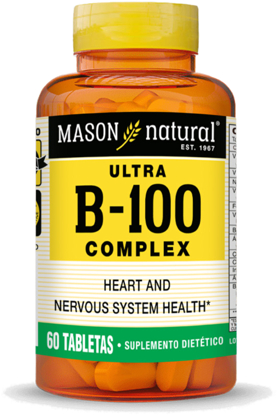
BellezaBiotina 10,000 mcg + Keratina
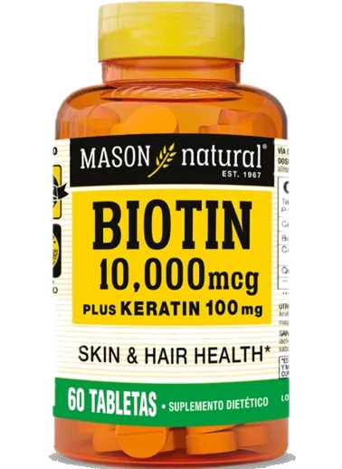
HuesosK2 + D3
CorazónUltra Fish Oil
Sistema nerviosoGlicinato de Magnesio Plus
DeporteL-Arginina 500 mg
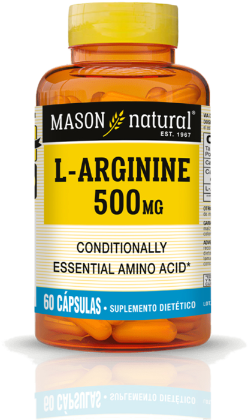
DigestivoUltra Enzimas Digestivas
VisiónLuteína 6 mg
5 · Más vendidosAcordado: bloquePropuesta de Evo: orden automático por unidades vendidasSin estrellas hasta tener reseñas verificadas de compradores (fase A6)
Más vendidos
‹ ›
Glicinato de Magnesio Plus
Descripción corta, de la ficha técnica
S/ XX+
Omega 3 Fish Oil
Descripción corta, de la ficha técnica
S/ XX+
K2 + D3
Descripción corta, de la ficha técnica
S/ XX+
Vitamina B-12
Descripción corta, de la ficha técnica
S/ XX+
6 · SliderAcordado: banners actuales de la web (Línea Ultra)no es solo para promociones (Víctor 12/11)
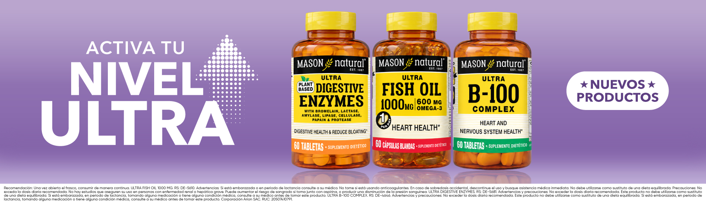
● ○ ○ Línea Ultra · 3 banners
7 · Frascos animadosAcordado: 3 Ultras (Víctor 12/11), con frente, lado y reversogiran al pasar el mouse; en celular, al deslizar
Línea Ultra
Pasa el mouse sobre el frasco para girarlo.
Ultra Fish Oil
frente
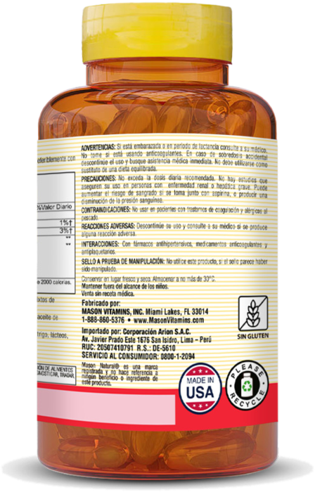
lado
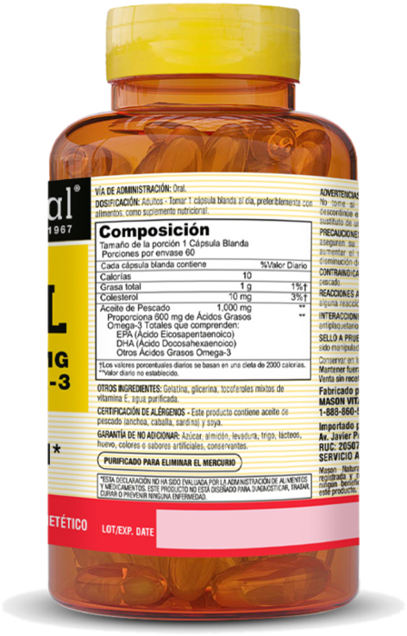
reverso
Ver producto
Ultra Enzimas Digestivas
frente
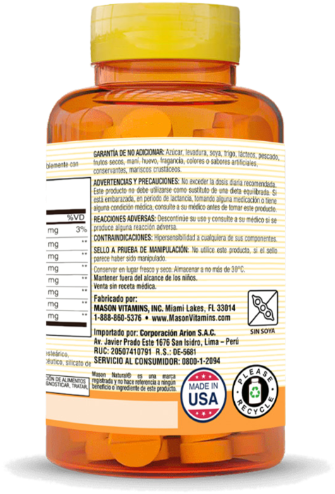
lado
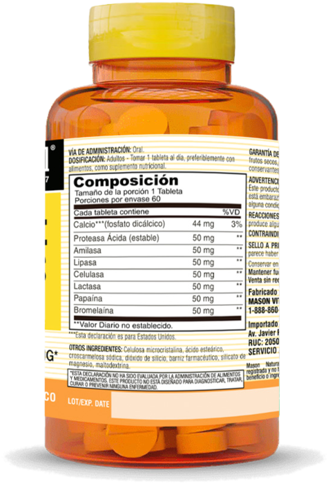
reverso
Ver producto
Ultra B-100 Complex
frente
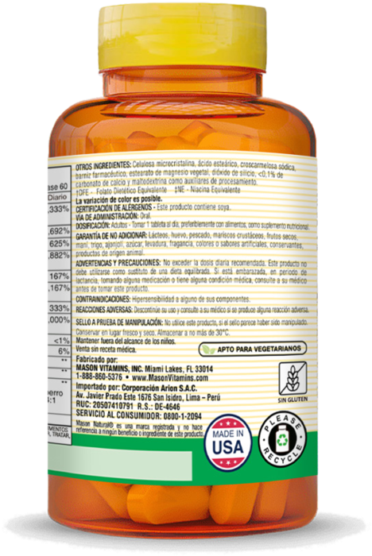
lado
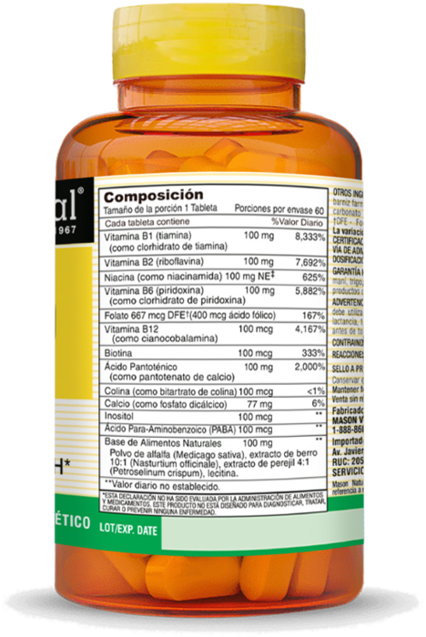
reverso
Ver producto
8 · Ciencia y calidadCondicionadocon los datos de laboratorio y certificaciones que Mason pueda publicar
Ciencia y calidad
Laboratorio
Certificaciones
Registro sanitario
Conoce nuestra ciencia
Foto artística o del laboratorio
9 · Duplas perfectasAcordado: nombre y duplas del archivo de Víctor (12/11)Cambio v3: frases literales del Excel y enlace a la página de duplasCondicionado: texto final y ahorro, con nutrición
Duplas perfectas
+
K2 + D3 con Glicinato de Magnesio
«El magnesio contribuye al buen funcionamiento de los huesos.»
Frase del archivo «Colaboración entre nutrientes» · la valida nutrición
S/ XXahorro por definirLlevar los dos
+
Omega 3 con Garlic Oil
«El ajo es tradicionalmente recomendado en la promoción de la salud cardiovascular.»
Frase del archivo «Colaboración entre nutrientes» · la valida nutrición
S/ XXahorro por definirLlevar los dos
+
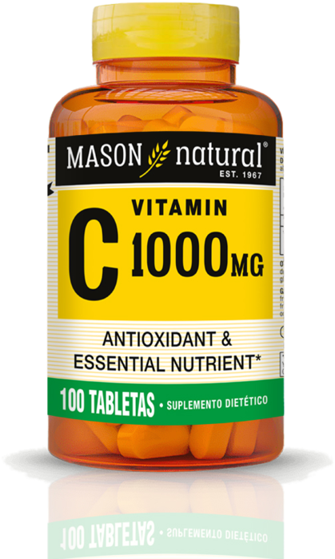
Vitamina E con Vitamina C
«La vitamina C ayuda a regenerar la forma reducida de la vitamina E.»
Frase del archivo «Colaboración entre nutrientes» · la valida nutrición
S/ XXahorro por definirLlevar los dos
Ver todas las duplas perfectas →
10 · Cuánto te duraAcordado: bloqueCondicionado: dosis de la ficha técnica; si falta, «sin dato»
Cuánto te dura
Glicinato de Magnesio Plus
60 cápsulas · 2 al día (dosis de la ficha técnica)
30 días
Ficha técnica oct. 2026, p. 98
Producto 2 · porciones ÷ dosis
Producto 3 · porciones ÷ dosis
Calcula tu rutina →
11 · Club MasonCondicionado: texto de beneficios vigentesCambio v3: fondo claro (marca wellness, sin negro)
CLUB MASON
Beneficios del Club Mason
Ejemplo: descuentos todos los días para socios
Tu correo
Únete
Acepto los Términos y condiciones y la Política de privacidad texto legal
Foto de persona (sesión de Mason)
12 · UGC y testimoniosAcordado: título de Víctor (12/11)Condicionado: videos del piloto UGC (dic.); nada de reseñas inventadas
Lo que cuentan quienes consumen Mason Natural
▶ Video vertical del piloto UGC
▶ Video vertical del piloto UGC
▶ Video vertical del piloto UGC
▶ Video vertical del piloto UGC
13 · JournalAcordadoantes «blog»; con compra rápida; conserva las direcciones del Nutri Blog
Journal
Ver todo
Foto del artículo
Bienestar
Título del artículo
Foto del artículo
Guías
Título del artículo
Foto del artículo
Recetas
Título del artículo
14 · Chat en vivoAcordadoCambio v3: lo atiende el chatbot (Víctor 13/11)botón flotante abajo a la derecha en todas las páginas, salvo carrito y checkout (fase A3)
Flota sobre la página. Al tocarlo se abre el chat (ver página 02).
Chat en vivoWA
15 · Pie de páginaAcordado: orden de Víctor 12/11 y «Términos y condiciones»Cambio v3: fondo claro, sin negro


 +
+